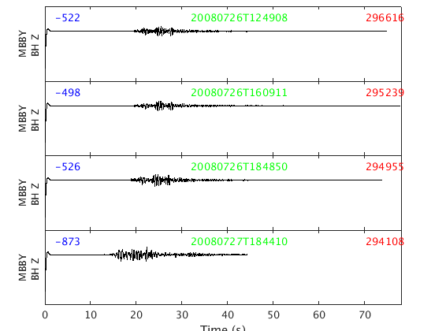
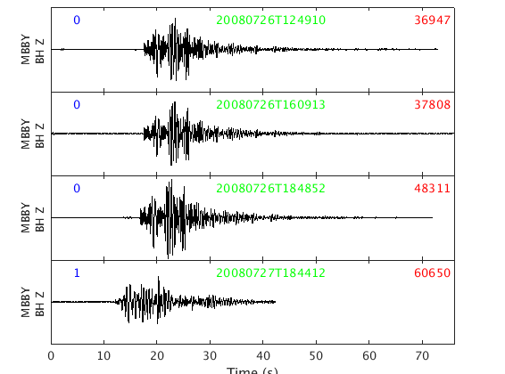
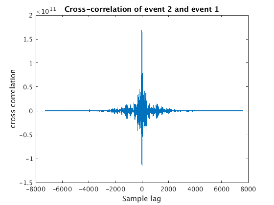
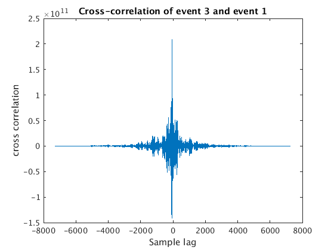
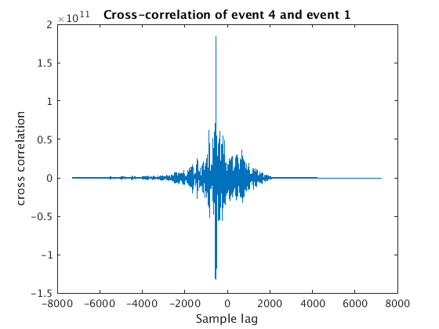
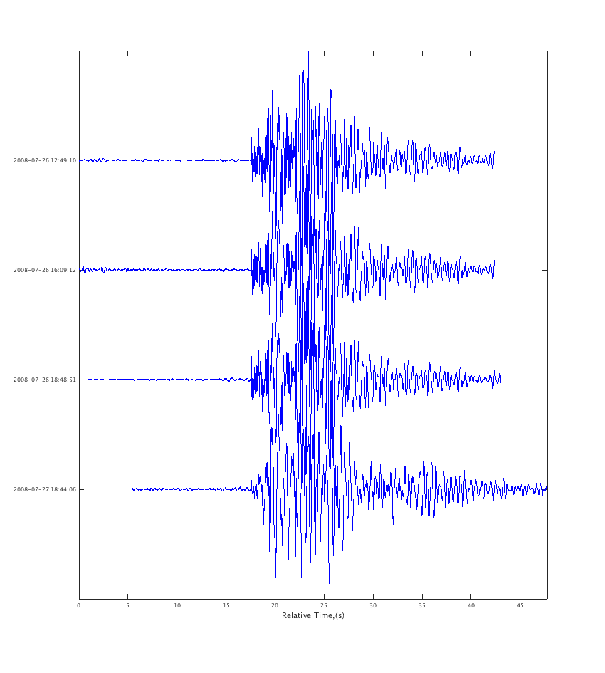

Load event files, align them with cross-correlation, plot them
Contents
- Overview
- 1. List our data files
- 2. Set the time range of interest
- 3. Set the stations/channels to load
- 4. Set the datasource for each file and load it as a separate waveform
- 5. Plot the waveform objects
- 6. Extract the good part of the signal
- 7. now correlate each against waveform 1
- 8. Finally we plot our waveforms aligned using the lagtimes from xcorr
Overview
In this example we load some similar looking seismic events from Soufriere Hills Volcano, Montserrat. They are stored in individual SAC files. We then align them via cross-correlation, and plot them to show waveform similarity.
We will use the waveform command to load our sac files. This requires three things:
- a datasource - where to get the data from
- a time range - start and end of the time window to load data for
- a scnlobject - this defines the stations & channels of interest
We will also be using MATLAB's xcorr() function to align waveforms and the correlation class to plot our aligned waveforms.
1. List our data files
First let's use MATLAB's dir command to see what SAC files our directory contains:
sacdir = '/home/t/thompsong/Downloads'; sacfiles = dir(fullfile(sacdir, '*_SAC')); sacfiles.name
ans = F_2008-07-26-1249-08S.MVO___031_MBBY__BH_Z_SAC ans = F_2008-07-26-1609-11S.MVO___031_MBBY__BH_Z_SAC ans = F_2008-07-26-1848-50S.MVO___031_MBBY__BH_Z_SAC ans = F_2008-07-27-1844-10S.MVO___031_MBBY__BH_Z_SAC
You will notice there are 4 files, recorded on 2008-07-26 and 2008-07-27
2. Set the time range of interest
Next we have to define the start and end of the time window we are interested in. As long as our files fall within this time range, it is ok.
snum = datenum(2008,7,26); % start time using MATLAB's datenum format enum = snum + 2; % end time, 2 days after start time
3. Set the stations/channels to load
All the files are for station Broderick's Yard, MBBY. We can wildcard the channel name in the case:
scnl = scnlobject('MBBY', '*')
scnl = station: MBBY channel: * network: location:
4. Set the datasource for each file and load it as a separate waveform
Often we can get away with using a single datasource object. But in this case we need to create one for each specific file, since the start times of each file are not predictable (in future we might modify datasource to handle this better). The fullfile() function just creates an OS-system independent path to each SAC file.
for filenum=1:length(sacfiles) ds = datasource('sac', fullfile(sacdir, sacfiles(filenum).name) ); w(filenum) = waveform(ds, scnl, snum, enum); end
now we have a vector of waveform objects, w. w(1) is the first waveform object - corresponds to the first SAC file, we have 4 waveform objects in total, since we had 4 SAC files.
5. Plot the waveform objects
plot_panels(w, true); % true here means align on the start of each trace
 On each trace the number in blue is the trace mean, the green text is the timestamp of the start of the trace, and the red number is the maximum amplitude of the trace.
You will notice these particular SAC files have some garbage at the beginning for about 1.5 seconds. That's really in the files - read them into sac and you will see the same thing.
6. Extract the good part of the signal
Let's get rid of those bad first 2 seconds with the waveform.extract() method.
for wnum=1:numel(w) % loop over each waveform object fs = get(w(wnum), 'freq'); % get the sampling frequency snum = get(w(wnum), 'start'); % get the start time enum = get(w(wnum), 'end'); % get the end time % extract from start time + 2 seconds to the end time % note we divide by the number of seconds in a day, because % MATLAB datenum's are in days (since year 0), not seconds secondsPerDay = 60 * 60 * 24; w(wnum) = extract(w(wnum), 'time', snum + 2/secondsPerDay, enum); end
Now if we replot the data, we see the garbage is gone, and the timestamp is 2 seconds later (the string in green for each trace).
plot_panels(w, true)
ans =
Figure (50) with properties:
Number: 50
Name: ''
Color: [0.9400 0.9400 0.9400]
Position: [680 558 560 420]
Units: 'pixels'
Use GET to show all properties
 7. now correlate each against waveform 1
y = get(w, 'data'); % get the data - this gives us a cell array, % e.g. y{1} is the data from w(1) fs = get(w, 'freq'); % get the sampling rates - gives us a vector fs(1) % is for first waveform object snum = get(w, 'start'); % get the start times for each waveform object % snum(1) is for first waveform object lagtime = snum; % set our lagtime vector equal to snum for now % you will see later that we need to pass a vector of % "trigger times" to correlation() for it to align on.
for wnum=2:4 % we use y{1} as our template (or needle), and then try to % others (our haystacks) with it [c, lags] = xcorr(y{wnum}, y{1}); % use xcorr to compute the % cross-correlation of this haystack % with our needle % we can plot the resulting cross-correlation function figure plot(lags,c); xlabel('Sample lag'); ylabel('cross correlation'); title(sprintf('Cross-correlation of event %d and event 1',wnum)) % what we want is the sample lag that corresponds to the maximum % cross-correlation, i.e. the best match [maxc, maxindex] = max(c); bestSampleLag = lags(maxindex); % Now we have to convert our bestSampleLag to days ... bestDaysLag = (bestSampleLag / fs(wnum) ) / secondsPerDay; % ... and then add this to the start time of our haystack to get the % "trigger time" we need for aligning this with our needle when we use % the correlation command below lagtime(wnum) = snum(wnum) + bestDaysLag; end  
8. Finally we plot our waveforms aligned using the lagtimes from xcorr
This part uses the correlation class to make a correlation object and plot it.
corrobj = correlation(w, lagtime); figure plot(corrobj)